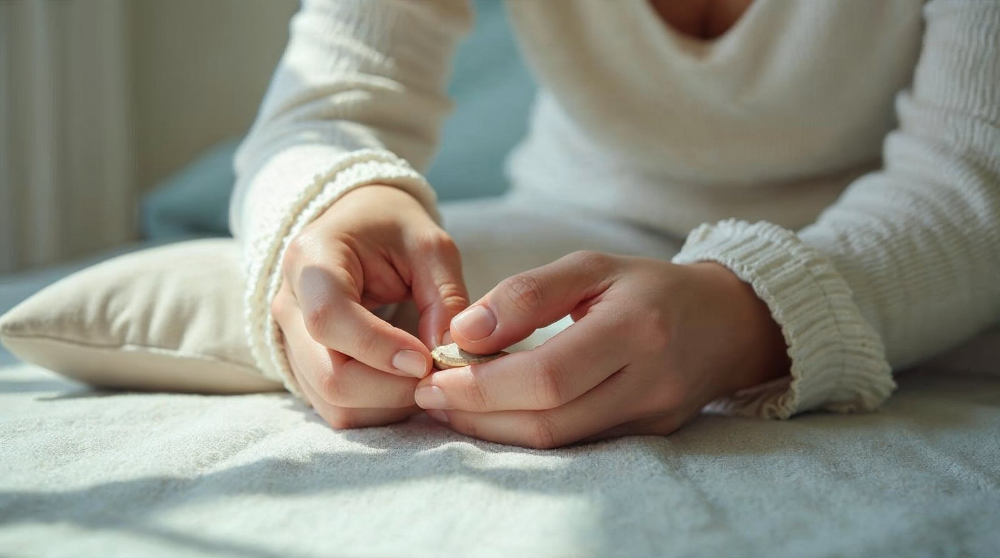
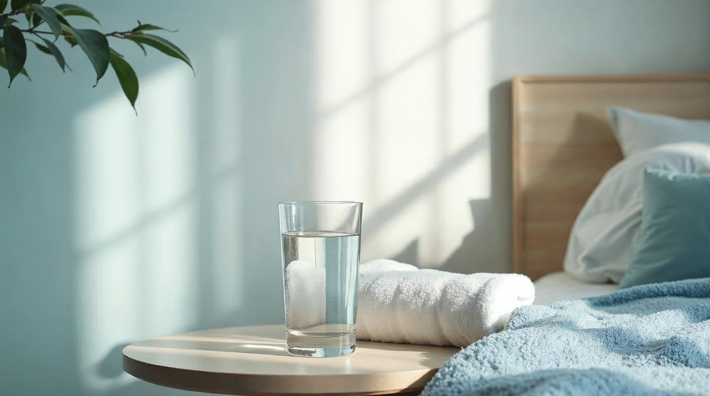
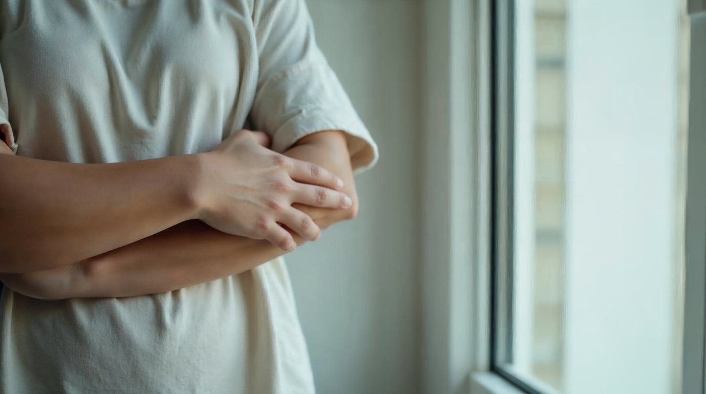
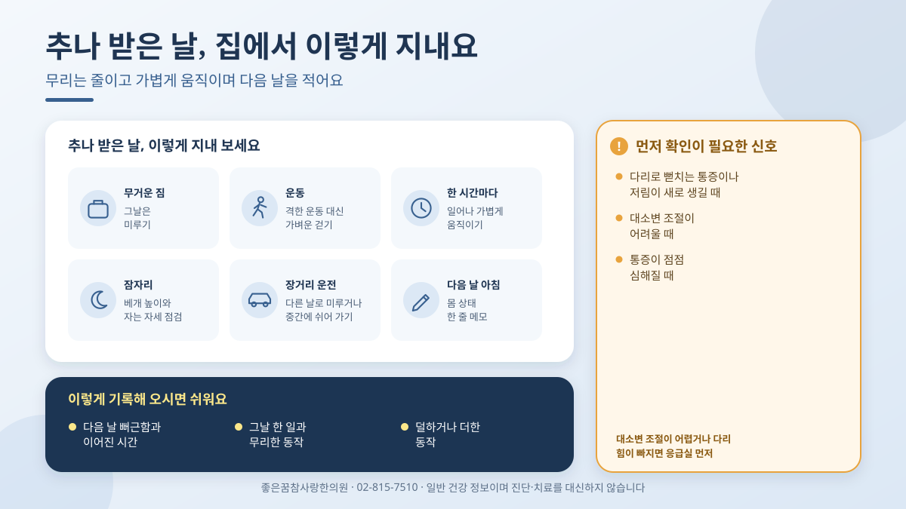

이종호 한의사 감수좋은꿈참사랑한의원 대표원장 (한의사 면허번호 19769)발행 2026-11-25 · 수정 2026-11-26
이 글의 차례
- 왜 그날은 무리를 줄일까요
- 먼저 이렇게 여쭙니다
- 일상에서 먼저 해 볼 수 있는 것
- 추나 뒤 뻐근함과 다시 아픈 것은 어떻게 구분할까요?
- 왜 한 번에 세게 하지 않고 나눠서 할까요?
- 한의원에서 함께 살필 수 있는 경우
- 헷갈리기 쉬운 점
- 자주 하는 오해
- 예를 들면 이런 경우입니다
- 그날 저녁부터 다음 날 아침까지는 이렇게 보내 보세요
- 출퇴근길이나 장보기는 어떻게 할까요?
- 목·어깨 추나와 허리·골반 추나는 조심할 점이 다를까요?
- 추나 뒤 졸리거나 나른한 건 왜 그럴까요?
- 침이나 약침, 체외충격파를 같이 받은 날은요?
- 운동은 어떤 순서로 다시 시작하면 될까요?
- 추나와 추나 사이의 날들은 어떻게 보낼까요?
- 스스로 점검해 보세요
- 이렇게 기록해 오시면 상담이 쉬워집니다
- 이런 증상은 먼저 확인이 필요합니다
- 얼마나 지켜보고, 언제 확인하면 좋을까요
- 처음 오시면 이렇게 진행합니다
- 관련 글
추나를 받고 돌아가면 그날 무엇을 하면 되는지, 무엇을 피해야 하는지 묻는 분이 많습니다. 추나는 한의사가 손으로 척추·관절·근육의 움직임을 살피고 조정하는 수기요법이라, 받은 날은 몸에 무리를 줄이는 편이 좋습니다.
예를 들어 추나를 받은 날 저녁에 이사 짐을 나르거나 오랜만에 축구를 하면, 다음 날 같은 부위가 다시 뻐근해졌다고 말씀하시는 경우가 있습니다. 반대로 종일 누워만 있는 것도 몸이 굳기 쉬워, 가벼운 걷기와 평소 일상 정도로 움직이는 것이 무난합니다.
추나를 받고 나면 몸이 가벼워졌다는 분도 있고, 오히려 묵직하다는 분도 있어요. 둘 다 흔한 반응이에요. 그러니까 사실은 오늘은 몸이 평소와 다른 범위로 움직여 본 첫날이라고 생각하시면 마음이 편해요.
왜 그날은 무리를 줄일까요
- 추나 뒤 하루 이틀 뻐근하다는 분들이 있습니다.
- 무거운 물건을 들면 다시 같은 부위에 부담이 갈 수 있습니다.
- 한 자세로 오래 있으면 굳는 느낌이 생길 수 있습니다.
- 다음 날 느낌을 기록하면 강도를 조절하는 데 도움이 됩니다.
- 장시간 운전이나 한 자세로 앉아 있는 일정은 허리와 목에 부담이 될 수 있습니다.
먼저 이렇게 여쭙니다
- 추나 뒤 바로 일하러 가시나요?
- 집에서 무거운 물건을 드는 일이 있나요?
- 운동 계획이 있으신가요?
- 지난번 추나 뒤 어떠셨나요?
일상에서 먼저 해 볼 수 있는 것
- 그날은 무거운 짐과 격한 운동 미루기
- 한 시간에 한 번 일어나 가볍게 움직이기
- 베개 높이와 자는 자세 점검하기
- 다음 날 아침 몸 상태 한 줄 메모하기
- 장거리 운전은 가능하면 다른 날로 조정하거나 중간에 쉬어 가기
추나 뒤 뻐근함과 다시 아픈 것은 어떻게 구분할까요?
두 개가 다른 얘기예요. 오랜만에 운동한 다음 날 근육이 묵직한 느낌 아시잖아요. 추나 뒤 뻐근함은 대개 그쪽에 가까워요. 움직이다 보면 조금씩 덜해지고, 넓은 부위가 둔하게 느껴지는 경우가 많아요.
반대로 원래 불편하던 자리가 예전과 같은 모양으로 다시 아프거나, 특정 동작에서 찌릿하게 걸린다면 따로 봐야 해요. 이때는 어떤 동작에서, 몇 시쯤 그랬는지를 적어 두시면 다음 진료에서 강도와 방법을 바꾸는 데 바로 쓰여요.
- 뻐근함: 묵직하고 넓게 느껴지고, 움직이면 덜해지며, 하루 이틀 사이 줄어드는 경우가 많아요.
- 다시 아픔: 원래 불편하던 자리에, 예전과 같은 양상으로, 특정 동작에서 찌릿해요.
- 새로 생긴 불편: 전에 없던 부위가 불편하다면 다음 진료 때 먼저 말씀해 주세요.
뻐근한 자리를 세게 주무르거나 두드리기보다는 그대로 두고 가볍게 움직여 주세요. 세게 누르면 그 자리가 더 예민해지기도 하거든요.
왜 한 번에 세게 하지 않고 나눠서 할까요?
빨리 편해지고 싶은 마음에 세게 해 달라는 분도 계세요. 그 마음 충분히 이해해요. 그런데 저는 약하게, 여러 번 나눠서 하는 쪽을 좋아해요. 오래 굳어 있던 몸은 한 번에 크게 움직이면 놀라서 더 움츠러드는 경우가 있거든요.
이사 가서 가구 배치를 바꾼 첫날을 떠올려 보세요. 몸이 새 동선에 익숙해지는 데 며칠은 걸리잖아요. 추나 뒤에도 몸이 새로 움직여 본 범위에 익숙해질 시간이 필요해요. 그래서 그날 저녁은 조용히 보내시라고 말씀드리는 거예요.
강도는 제가 지난번 반응을 보고 정할게요. 대신 하나만 부탁드려요. 다음 날 아침 몸 상태를 한 줄만 적어 오시는 거예요. 딴 건 평소 하던 대로 편하게 하셔도 돼요.
한의원에서 함께 살필 수 있는 경우
- 추나 뒤 뻐근함이 이틀 넘게 이어지는 경우 강도와 간격을 조절합니다.
- 같은 자세 습관이 반복되는 경우 생활 자세를 함께 봅니다.
- 다른 부위가 새로 불편해진 경우 다음 진료에서 함께 살핍니다.
좋은꿈참사랑한의원에서는 추나 뒤 반응을 다음 방문에서 같은 동작으로 다시 확인하고, 필요하면 침·약침 등을 함께 정합니다.
헷갈리기 쉬운 점
뻐근하다고 해서 잘못된 것은 아니지만, 참아야 하는 것도 아닙니다. 뻐근함의 정도와 이어진 시간을 알려 주시면 다음 추나의 강도를 조절하는 데 쓰입니다.
자주 하는 오해
- 추나 뒤에는 꼼짝하지 않고 누워 있어야 한다고 생각하는 분이 있지만, 가벼운 걷기와 평소 일상 정도의 움직임은 대개 괜찮습니다.
- 몸이 가벼워졌다고 그날 바로 미뤄 둔 운동이나 대청소를 몰아서 하면, 다음 날 같은 부위에 다시 부담이 갈 수 있습니다. 그날은 조금 아껴 쓰는 날로 생각해 주세요.

예를 들면 이런 경우입니다
- 예를 들어 추나를 받은 날 밤 아이를 안아 재워야 하는 경우라면, 바닥에서 바로 들어 올리기보다 침대나 소파에 앉은 상태에서 안아 허리를 깊이 숙이는 동작을 줄여 보세요.
- 예를 들어 저녁에 헬스나 등산 약속이 있는 경우라면, 그날은 가벼운 걷기나 스트레칭 정도로 바꾸고 강한 운동을 다시 시작할 시점은 다음 진료 때 함께 정해 보셔도 좋습니다.
- 예를 들어 추나 뒤 바로 재택근무로 몇 시간 앉아 있어야 하는 경우라면, 타이머를 맞춰 한 시간에 한 번 일어나 몇 걸음 걷고, 모니터 높이와 의자에 앉는 깊이를 한 번 점검해 보세요.
그날 저녁부터 다음 날 아침까지는 이렇게 보내 보세요
- 집에 와서: 바로 소파에 오래 눕기보다 집 안을 가볍게 걷거나 설거지 같은 가벼운 집안일 정도로 몸을 움직여 보세요.
- 저녁 식사: 평소처럼 드셔도 괜찮아요. 다만 늦은 시간의 과식은 잠을 방해할 수 있어 가볍게 드시는 편이 좋아요.
- 씻을 때: 가벼운 샤워는 대개 괜찮아요. 몸이 나른한 날에는 뜨거운 물에 오래 있기보다 짧게 씻고 몸을 따뜻하게 말려 주세요.
- 잠자리: 옆으로 누울 때 무릎 사이에 베개를 끼우거나, 바로 누울 때 무릎 밑에 쿠션을 받치면 허리가 덜 당긴다는 분이 많아요.
- 아침에 일어날 때: 벌떡 일어나기보다 옆으로 돌아누운 뒤 팔로 짚고 일어나 보세요. 최대한 천천히요.
- 아침 메모: 일어날 때 뻐근함이 어느 정도였는지, 세수하며 허리를 숙일 때 어땠는지 한 줄로 적어 주세요.
출퇴근길이나 장보기는 어떻게 할까요?
추나를 받고 바로 집에 가지 못하고 장을 보거나 대중교통을 타야 하는 날도 있죠. 그럴 때는 이렇게 해 보세요.
- 버스나 지하철에서 서 있을 때: 손잡이를 잡고 무릎을 살짝 굽혀, 흔들림을 다리로 받아 주세요.
- 장을 볼 때: 무거운 장바구니는 한 손에 몰지 말고 양손에 나눠 들거나, 카트나 배달을 이용해 보세요.
- 계단을 오를 때: 난간을 잡고 한 칸씩, 서두르지 말고 올라가 주세요.
그날 일정이 길어질 것 같다면 추나 받기 전에 미리 말씀해 주세요. 그날 동선에 맞춰 강도를 정하고, 집까지 가는 길에 조심할 동작을 함께 짚어 드려요.
목·어깨 추나와 허리·골반 추나는 조심할 점이 다를까요?
같은 추나라도 받은 부위에 따라 그날 아껴 쓸 동작이 조금 달라요.
- 목·어깨: 고개를 오래 숙이고 휴대폰을 보는 자세, 높은 선반에 팔을 오래 올리는 일, 엎드려 자는 자세를 그날은 줄여 보세요.
- 허리·골반: 바닥에 앉아 허리를 구부리는 좌식 자세, 허리를 숙여 물건을 드는 동작, 다리를 꼬고 오래 앉는 자세를 줄여 보세요.
- 머리·얼굴 쪽(두개천골추나): 이를 꽉 무는 습관이 있다면 그날은 한 번씩 턱의 힘을 빼 보세요.
어느 부위든 공통은 하나예요. 그날만큼은 조금 아껴 쓰는 날로 생각해 주시면 돼요.
추나 뒤 졸리거나 나른한 건 왜 그럴까요?
추나를 받은 날 유난히 졸리다는 분이 많아요. 원래 그래요. 늘 힘을 주고 버티던 근육이 잠깐 힘을 빼게 되면서 그동안 쌓인 피로가 한꺼번에 느껴지는 경우가 많거든요.
그날은 잠깐 눈을 붙이셔도 괜찮고, 밤에 평소보다 조금 일찍 주무셔도 좋아요. 나른함이 다음 날까지 이어진다면 그것도 한 줄 적어 오세요. 다음 추나의 강도를 정할 때 함께 봐요.
침이나 약침, 체외충격파를 같이 받은 날은요?
추나와 함께 다른 치료를 받은 날은 그 치료의 주의점도 같이 챙겨 주세요.
- 침이나 약침을 맞은 날: 맞은 자리를 세게 문지르거나 긁지 말아 주세요.
- 체외충격파를 받은 날: 치료한 부위가 잠시 뻐근하거나 붉어질 수 있어, 그 부위로 무거운 것을 오래 버티는 동작은 줄여 주세요.
- 온열 물리치료를 받은 날: 집에 가서 같은 부위에 찜질을 더 오래 하기보다 그날은 그대로 두셔도 돼요.
어떤 치료를 함께 받았는지 헷갈리시면 귀가하시기 전에 물어보세요. 그날 피할 동작을 한 번 더 정리해 드려요.
운동은 어떤 순서로 다시 시작하면 될까요?
운동하지 말라는 게 아니에요. 다시 시작하는 순서를 같이 정하자는 거예요. 가벼운 걷기부터 하시고, 다음 날 몸이 괜찮으면 스트레칭, 그다음에 원래 하던 운동으로 넘어가 보세요.
원래 하던 운동도 처음엔 무게나 거리를 평소의 반쯤에서 시작해 보세요. 최대한 천천히요. 그리고 운동한 다음 날 아침 느낌을 적어 오시면, 다음 단계로 넘어갈 때를 진료 때 함께 정해요.
골프나 테니스처럼 몸을 한쪽으로 크게 비트는 운동은 조금 더 늦게, 다음 진료에서 몸 상태를 본 뒤에 다시 시작해 보세요.
추나와 추나 사이의 날들은 어떻게 보낼까요?
추나는 제가 할게요. 대신 생활에서는 딱 하나만 골라 주세요. 하루 중 가장 오래 하는 자세 하나예요. 소파에 비스듬히 기대기, 다리 꼬고 앉기, 한쪽 어깨로만 가방 메기 같은 것들이요.
그 하나를 하루에 몇 번만 의식해서 바꿔 보셔도 충분해요. 딴 건 하던 대로 편하게 하세요. 어떤 자세를 골랐는지 다음 진료 때 알려 주시면 추나 방법도 그에 맞춰 봐요.
자세를 바꾸는 걸 깜빡 잊으셔도 괜찮아요. 원래 그게 어려워요. 생각날 때 다시 하시면 돼요.
스스로 점검해 보세요
- 오늘 무거운 짐을 들거나 옮길 일정이 있다
- 저녁에 강한 운동이나 장거리 운전 계획이 있다
- 오늘 몇 시간 이상 한 자세로 앉아 있어야 한다
- 베개 높이나 자는 자세가 최근 바뀌었다
- 지난번 추나 뒤 뻐근함이 생각보다 오래갔다
- 내일 아침 몸 상태를 한 줄로 메모할 수 있다
해당하는 항목은 추나 전에 말씀해 주세요. 그날 일정에 맞춰 강도와 범위를 정하고, 집에서 피할 동작을 함께 알려 드립니다.

이렇게 기록해 오시면 상담이 쉬워집니다
- 추나 다음 날의 뻐근함과 시간
- 그날 한 일과 무리한 동작
- 자는 자세와 베개
- 불편이 덜하거나 더한 동작
- 추나 받은 날의 운전·앉아 있던 시간
이런 증상은 먼저 확인이 필요합니다
- 다리로 뻗치는 통증·저림이 새로 생기거나 다리 힘이 빠지는 경우
- 대소변 조절이 어렵거나 엉덩이·사타구니 감각이 둔해진 경우
이런 신호가 있으면 한의원보다 가까운 병원이나 응급실을 먼저 찾으세요.

얼마나 지켜보고, 언제 확인하면 좋을까요
- 추나 뒤 뻐근함이 하루 이틀 안에 가라앉는다면, 그 시간과 정도를 메모해 다음 진료 때 알려 주세요.
- 뻐근함이 사흘 넘게 이어지거나 날마다 더 심해진다면 다음 예약을 기다리지 말고 연락해 주세요.
- 다음 추나까지의 간격은 미리 정해 두기보다 지난번 반응을 보고 진료 때 함께 정합니다.
- 추나 뒤 잠자리에서 돌아눕기가 불편한 날이 이어진다면, 그 시간대와 자세를 적어 다음 진료 때 보여 주세요.
처음 오시면 이렇게 진행합니다
첫 방문에는 접수 때 기본 정보를 적고, 진료실에서는 모든 분께 맥을 짚으며 불편한 부위와 시작된 경위, 하루 중 오래 하는 자세를 여쭙습니다. 이어서 신체 진찰을 하고, 필요하면 초음파로 근육과 힘줄을 확인합니다.
추나가 필요하다고 판단되면 방법과 이유를 먼저 설명드린 뒤 진행하며, 자세나 강도가 불편하면 언제든 말씀해 주세요. 추나가 끝나면 같은 동작으로 다시 움직여 보며 확인하고, 그날 집에서 피할 동작과 다음 방문 때 확인할 내용을 알려 드립니다.
건강보험(또는 자동차보험) 적용 여부는 방문 전 전화로 확인해 주세요.
추나는 받는 시간만큼이나 받고 난 하루를 어떻게 보내느냐도 중요한 거예요. 궁금한 동작이 있으면 그냥 편하게 물어보세요. 같이 정하면 돼요.
관련 글

여쭙는 것
- 추나 뒤 바로 일하러 가시나요?
- 집에서 무거운 물건을 드는 일이 있나요?
- 운동 계획이 있으신가요?
생활에서 해 볼 것
- 그날은 무거운 짐과 격한 운동 미루기
- 한 시간에 한 번 일어나 가볍게 움직이기
- 베개 높이와 자는 자세 점검하기
한의원에서 함께 살필 것
- 추나 뒤 뻐근함이 이틀 넘게 이어지는 경우 강도와 간격을 조절합니다.
- 같은 자세 습관이 반복되는 경우 생활 자세를 함께 봅니다.
- 다른 부위가 새로 불편해진 경우 다음 진료에서 함께 살핍니다.
먼저 확인이 필요한 신호
- 다리로 뻗치는 통증·저림이 새로 생기거나 다리 힘이 빠지는 경우
- 대소변 조절이 어렵거나 엉덩이·사타구니 감각이 둔해진 경우
한눈에 보는 표
| 구분 | 핵심 |
|---|---|
| 여쭙는 것 | 추나 뒤 바로 일하러 가시나요? 집에서 무거운 물건을 드는 일이 있나요? |
| 생활에서 해 볼 것 | 그날은 무거운 짐과 격한 운동 미루기 한 시간에 한 번 일어나 가볍게 움직이기 |
| 한의원에서 함께 살필 것 | 추나 뒤 뻐근함이 이틀 넘게 이어지는 경우 강도와 간격을 조절합니다. 같은 자세 습관이 반복되는 경우 생활 자세를 함께 봅니다. |
| 먼저 확인이 필요한 신호 | 다리로 뻗치는 통증·저림이 새로 생기거나 다리 힘이 빠지는 경우 대소변 조절이 어렵거나 엉덩이·사타구니 감각이 둔해진 경우 |
자주 묻는 질문
샤워해도 되나요?
대개 가벼운 샤워는 괜찮습니다.
운동은 언제부터 하나요?
가벼운 걷기는 괜찮고, 강한 운동은 진료 때 함께 정합니다.
뻐근하면 다음 추나를 쉬어야 하나요?
다음 방문 때 말씀해 주시면 강도와 간격을 조절합니다.
추나 뒤 소리가 났는데 괜찮나요?
관절에서 소리가 날 수 있으며 꼭 소리가 나야 하는 것은 아닙니다. 통증이 심해지면 알려 주세요.
좋은꿈참사랑한의원은 재진 때 지난번 이야기부터 이어서 여쭙니다. 진료시간과 예약은 오시는 길에서 확인하세요.
어디서 상담받을 수 있나요?
좋은꿈참사랑한의원은 서울 동작구 만양로2길 2 신성빌딩 3층·5층(서울 동작구 상도동, 7호선 상도역 3번 출구 근처)에 있습니다. 한의사 3명(이종호 대표원장, 조영기 수석진료원장, 정원영 진료원장)이 진료합니다. 진료시간은 평일 09:30~20:00(점심 13:00~14:00), 토·일·공휴일 09:30~15:00이며, 방문 전 전화로 확인을 권합니다. 예약은 네이버 예약, 카카오톡 상담, 전화 02-815-7510로 받습니다.
이 글은 일반적인 건강 정보이며 개인의 진단이나 치료를 대신하지 않습니다. 증상이 있거나 복용 중인 약이 있다면 진료를 통해 확인하세요. 치료 효과는 개인마다 다를 수 있습니다.
작성 기준: 일반적으로 알려져 있는 건강 정보를 참고해 정리했습니다(대표원장 감수). 증상 기록은 1~2주 동안 하루 1회, 비슷한 시간에 적어 오시면 지난 상태와 비교하기 쉽습니다.